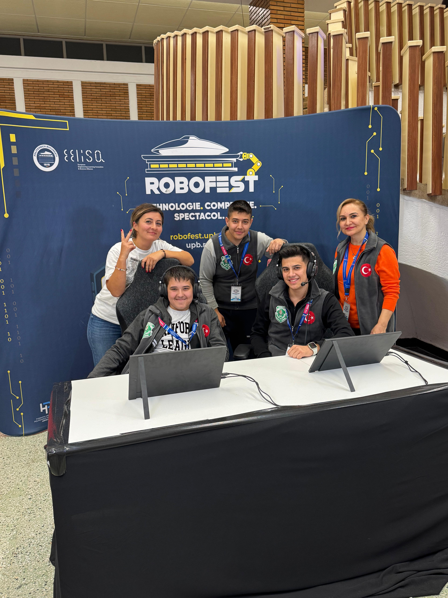
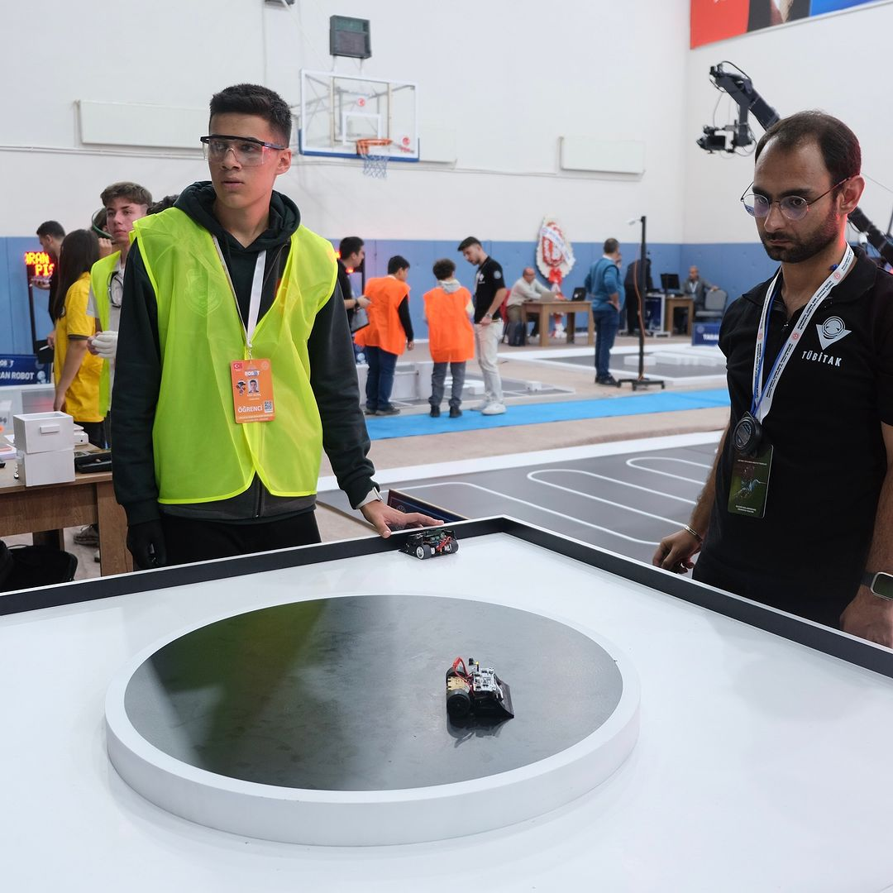
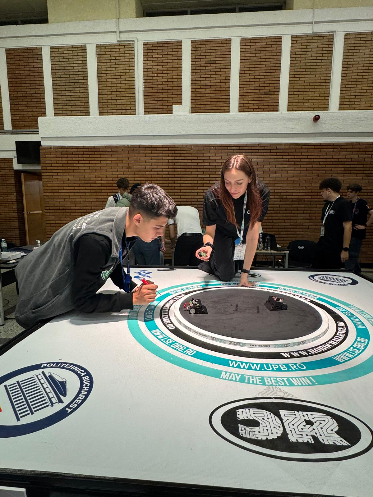
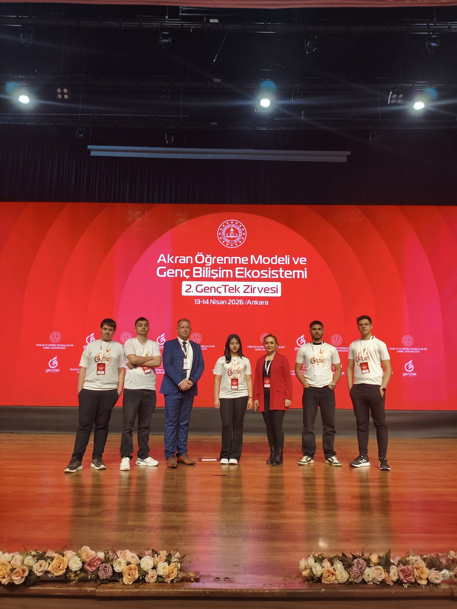

ROBOTTRAK ’26
1.
Türkiye birinciliği
İleri Seviye Çizgi İzleyen
2026MERAK ET. GELİŞTİR. HAYATA GEÇİR.
Software DeveloperComputer Technician
Fikirleri koda,
kodu hayata dönüştürüyorum.
Web, mobil ve masaüstü yazılımları geliştiriyor; bilgisayar ve ağ sistemlerinde teknik çözümler üretiyorum.
// Merak, bir başlangıç noktası.const developer = { name: "Yiğit Sevinç", roles: [ "Software Developer", "Computer Technician" ], focus: ["Web", "Mobile", "Desktop"], beyondCode: ["Hardware", "Networks"], building: "SVC Soft"}; // Her fikir, bir sonraki adım.console.log("Let's build something.");# Kodun ötesinde, sahada da.workspace = { "software": ["Python", "C/C++", "C#"], "systems": ["PC", "Networks"], "support": ["Setup", "Diagnostics"],} process = [ "Explore", "Build", "Test", "Improve"] for step in process: print(step)# Öğren. Üret. Tekrar dene.01 / KİMİM
Ben Yiğit Sevinç; yazılım geliştiricisi ve bilgisayar teknisyeniyim.
Edirne Mesleki ve Teknik Anadolu Lisesi’nin Bilişim Teknolojileri alanından okul birincisi olarak mezun oldum. Şu anda Trakya Üniversitesi Yazılım Geliştirme bölümünde lisans eğitimime devam ediyorum.
Web, mobil ve masaüstü uygulamaları geliştiriyorum. 2023’ten bu yana SD Bilişim’de bilgisayar, ağ sistemleri ve teknik destek alanlarında saha deneyimi kazanıyorum. Geçmişte robotik yarışmalarına katıldım ve TEKNOFEST için projeler geliştirdim. Ürünlerimi SVC Soft çatısı altında bir araya getiriyorum.
SVC Soft’u ziyaret et02 / BAŞARILAR
Atölyedeki emeğin yarışma sahasına taşındığı anlardan bazıları.
1.
İleri Seviye Çizgi İzleyen
20262.
Mini Sumo Robot
2026Çeyrek
final
Romanya · Robot yarışması
202518.
Labirent kategorisi
202503 / GALERİ
Yarışma sahasından ve birlikte ürettiğimiz anlardan küçük bir seçki.

01 / ROMANYAEkip ruhu
02 / ROBOTİKYarışma anı
03 / HAZIRLIKİşin başında
04 / ANKARAGençTek ZirvesiDiğer fotoğraflar için yana kaydır
İLETİŞİM
Proje, iş birliği veya bir soru için doğrudan yazabilirsin.